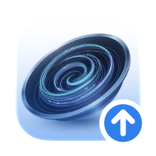
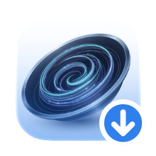
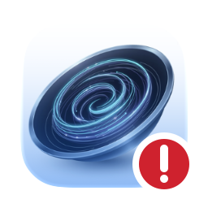
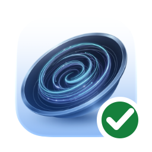

The tiddler keeps the URI and synchronization digests needed for future checks.
Only the local side changed, so the same linked Memory is updated in place.

Tiddler is newerThe native app updates the same Memory. No browser-only simulation and no duplicated record.
Only the remote side changed, so the active tiddler pulls the new content and returns to green.

Memory is newerThe button turns red and reports a conflict. The plugin waits for a human decision.

Conflict requires review